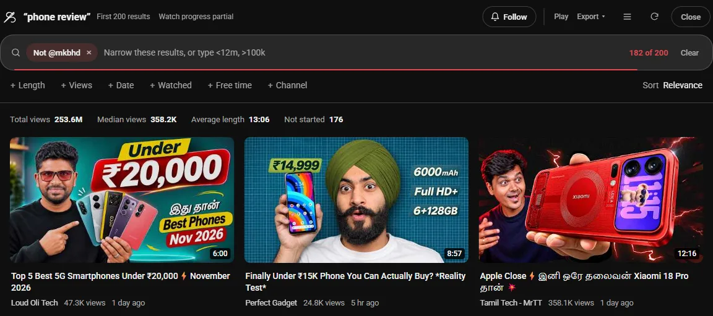

Guide 14·Search
How to exclude a channel or a word from YouTube search.
Updated 10 November 2026
Short answer
For a word, YouTube's own minus sign works: phone review -iphone drops the results with "iphone" in the title. For a channel it doesn't. phone review -@mkbhd gives you only MKBHD's videos, and phone review -mkbhd without the @ leaves them in. Needle makes the channel version work: the same -@mkbhd in YouTube's search bar takes that channel out of the results.
01·On YouTube
What YouTube's minus sign does
YouTube still understands a minus sign in the search bar, but only for words. Here's what came back for three searches in November 2026:
phone review -iphone: no result had "iphone" in its title. Excluding a word works.phone review -@mkbhd: all 14 results were from MKBHD. YouTube treats@mkbhdas "search this channel" and drops the minus, so you get the opposite of what you asked for.phone review -mkbhd: MKBHD's videos were still there. Without the @ it's just a word, and his name isn't in his titles.
So when one channel fills every search for a topic, YouTube's search bar has no way to leave it out. Don't recommend channel, in the ⋮ menu on Home, doesn't help either: it thins out recommendations and never touches search.
02·With Needle
Leave a channel out with Needle
- Type your search into YouTube's own search bar and add
-@plus the channel's handle:phone review -@mkbhd. - Press Enter.
- YouTube searches for
phone review, and Needle opens its panel on the first 200 results with that channel taken out. A Not @mkbhd chip shows what's being left out. Click its × to bring them back.

The handle is the @name under the channel's name on its page, and the end of its address: youtube.com/@mkbhd. Part of the channel's name works too, as long as it has no spaces: -@marques catches Marques Brownlee.
03·Words
Leaving out words
YouTube's own -word is fine for search results. Needle's -word does a little more: it also checks the channel's name, and it works where YouTube has no search at all, like your Watch Later, your history and your playlists. in:wl -podcast is everything you saved that isn't a podcast.
04·Combine it
Combine it
-@name -@other | Leave out two channels |
-remix -live | Leave out two words |
@name | The opposite: only that channel |
-@name sort:newest | Newest first, without that channel |
-@name >10m | Without that channel, nothing under 10 minutes |
The search filters guide lists every filter Needle understands.
05·For good
Hide a channel for good
A -@name lasts one search. To never see a channel again, open the ⋮ menu on any of its videos and pick Mute channel, which Needle adds to YouTube's own menu. It stays out of search, Home, Subscriptions and Shorts until you unmute it. Blocking a channel covers that, with words and Shorts.
06·Questions
Questions?
Why does -@channel show only that channel?
YouTube reads @name as the channel to search in and ignores the minus in front of it. When we tried phone review -@mkbhd in November 2026, every one of the 14 results was from MKBHD.
Does YouTube see -@mkbhd when Needle is on?
No. Needle takes it out of the search, YouTube searches for the rest of your words, and Needle removes that channel's videos from what comes back.
Can I leave out more than one channel?
Yes. Add as many as you like: -@one -@two. Words work the same way, -remix -live, and you can mix both in one search.
Can I hide a channel everywhere, for good?
Yes. Needle adds Mute channel to YouTube's own ⋮ menu. A muted channel stays out of search, Home, Subscriptions and Shorts until you unmute it.
Is it free?
Yes. No account, no trial, no paid tier.